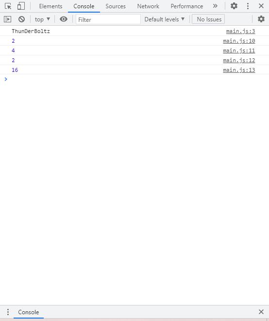

Visual Studio Code is a great app. How to set it up: you first go to visualstudiocode.microsoft.com and choose your device. Then, a downloader will start downloading, so let that download. After that, you'll want to say yes to everything. And, you want to have it as a desktop icon. After that, it will install onto your desktop. There you have it!
How to access the console screen: You right click on the page, and click on inspect. Then, you'll see something on your right, with code on it. At the top, it'll show you're on elements. Right next to it, it'll show console. Click on it, and you're in the console screen!
